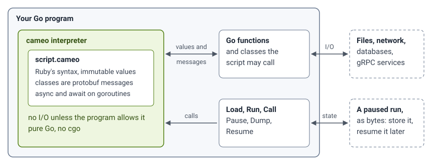

Ruby, but immutable.
cameo is a language with Ruby's syntax, run by an interpreter written in Go. It is made for embedding in Go programs.
Every value is immutable. A call that would change a value in Ruby rebinds the local variable it is called on to a changed copy; every other reference keeps what it held. Classes declare typed fields, and every instance is a protobuf message.
include Cameo # async, await and promises
class Point
int :x, :y
def +(other) = Point.new(x: x + other.x, y: y + other.y)
end
a = Point.new(x: 1, y: 2)
b = a
a.x = 10 # rebinds a to a copy; b keeps x: 1
c = a.with { |p| { y: p.y * 5 } }
p a, b, c
job = async a, :+, c # a.+(c) on a goroutine; job is its promise
p await jobPoint(x: 10, y: 2)
Point(x: 1, y: 2)
Point(x: 10, y: 10)
Point(x: 20, y: 12)
What it is for: scripting a Go program
A Go program loads a cameo script, runs it, calls its methods, and
passes values and protobuf messages both ways. A script's classes are
protobuf messages, so the host reads an instance as a
proto.Message, and a message the host builds becomes an
instance in the script.
- It starts in microseconds. Loading, checking and
running a five-line script with a class takes about 80 µs in a Go
process (
cameo.Runin a loop of 2000, on a four-core Linux machine). - It needs no cgo. The interpreter and its parser, go-ruby-parser, are pure Go: no Ruby installation and no code generation.
- It builds wherever Go does. The
cameopackage compiles withCGO_ENABLED=0for ios/arm64, android/arm64, darwin/arm64, windows/amd64, js/wasm and wasip1/wasm. - A script does no I/O of its own. It has no
ENV, sockets orsystem, and writes only to the two streams the host gave it. The host allows more kind by kind, such as files in a file system of its choosing, or gives the script a module of Go functions. - A run can stop and go on later. The host pauses a script where it is, keeps its state as bytes, and resumes it in another process.
A script runs in its own interpreter, and RunContext stops
it, with every worker it started, when the host's context ends.
How fast it is
cameo runs the 781 cases of CRuby's own benchmark suite that use only what cameo supports, every one with Ruby's output. Over the 772 that CRuby 3.4 runs too, on a laptop:
cameo takes 1.51 times CRuby's time on the typical case, and CRuby with YJIT 0.88 times. It is faster than CRuby on strings, times and paths, and slowest on hashes and on calls of small methods.
Numbers has the table by category, how it was measured, and how much of Ruby cameo runs.
Read on
The interpreter is complete to its design. The current release is v0.4.2, under the MIT licence.